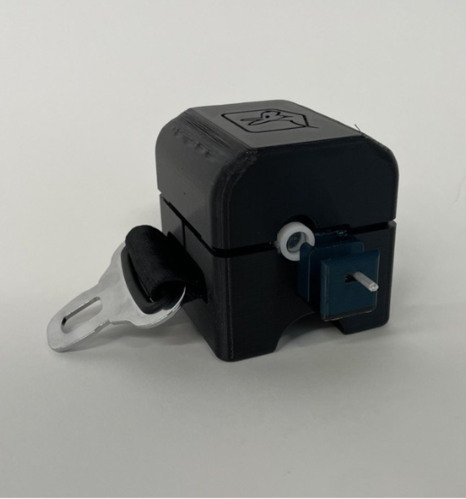
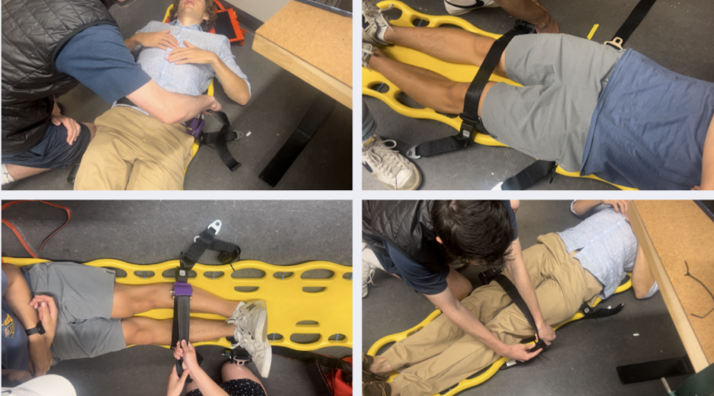

Kangaroo Belt Emergency Seatbelt System
Auto-locking, auto-retracting stretcher strap for ambulance use.
Overview
During a gap year before Dartmouth, I completed an EMT course and worked as an ambulance responder in Cambridge, MA. On calls, I kept running into the same frustration: the straps used to secure patients to backboards were slow and fiddly to buckle in an emergency, when seconds matter. When an intro engineering design course gave me the chance to pick my own problem, I brought this one to the team.
Approach
We reimagined the standard backboard strap as a locking, retractable system — closer to a seatbelt than a buckle — that mounts directly on the backboard for fast, reliable deployment with minimal fumbling. I led the mechanical design of the auto-locking, auto-retracting mechanism and validated it against real strength requirements: we ran FEA on the load path and backed it up with physical tensile testing on an Instron to confirm it met the national Title 49 strength requirement for occupant restraints.
Gallery


Results
The final design lowered patient stretcher securing time by 66% compared to the standard strap-and-buckle setup, while meeting Title 49 strength requirements. The team was interested enough in the result that we looked seriously at what it would take to commercialize it.